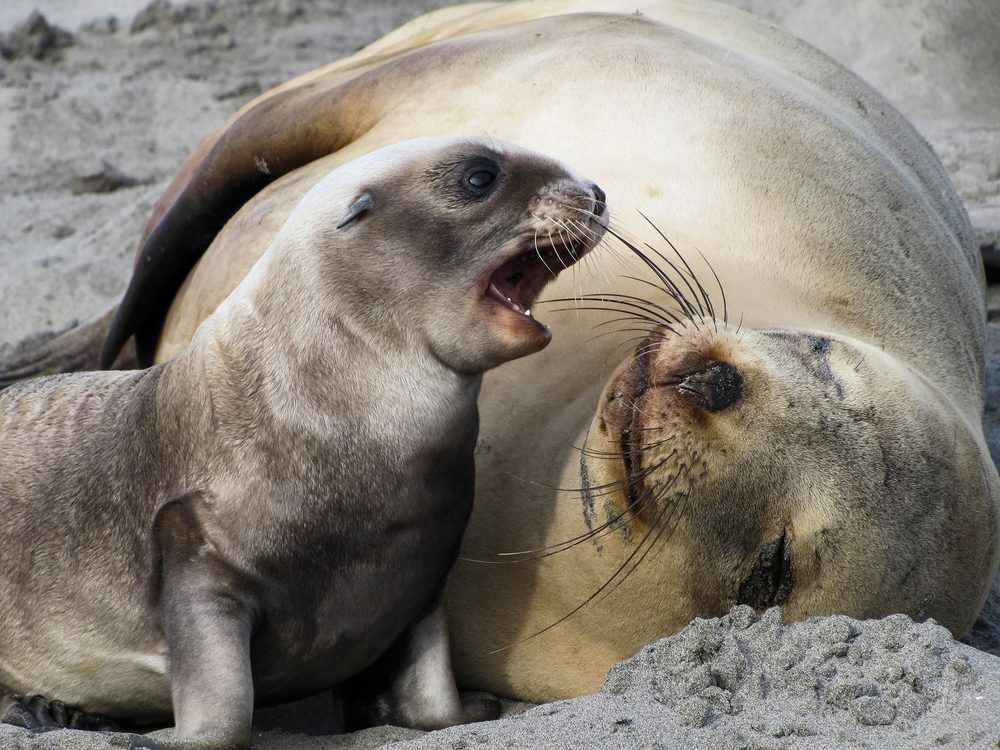

Flora, Birds, Wildlife
Flora
Botanists and naturalists have delighted in visiting Rakiura Stewart Island since the early 1900s.

Amongst them, an eminent botanist, Dr Leonard Cockayne carried out a botanical survey of Rakiura. In his report of 1909, he elaborated on the Island's significance:
"The face of the earth is changing so rapidly that soon, in temperate regions at any rate, there will be little of primitive Nature left. In the Old World it is practically gone forever. Here then is Stewart Island's prime advantage, and one hard to overestimate. It is an actual piece of the primeval world..."

Much of the Island is still relatively unmodified and is one of the few areas in New Zealand containing remnants of near pristine native forest abounding in treasures. Our temperate rainforest, is predominantly a southern mixed-hardwood podocarp forest. A variety of tree ferns and ground ferns are readily seen. There are alpine, wetland, dune plants and tussock fields. Delightful little orchids are seen mainly during spring and summer months.
Birds
Rakiura is home to many species of birdlife, some rare, some endangered.
Kiwi

The Rakiura kiwi, known as the Stewart Island Tokoeka, Apteryx australis lawyri - is one of several varieties of kiwi in New Zealand, all are fully protected. Kiwi are flightless and largely nocturnal. However, the Stewart Island Tokoeka is known to be active during the day and night. A unique bird, that was initially believed to be a hoax by scientists in Europe, has been adopted as New Zealand's national bird, not surprising for a country unique in itself.
Kākāpō
Codfish Island/Whenua Hou is a special nature reserve on the northwest coast of Rakiura Stewart Island and an important breeding site for critically endangered kākāpō, that number about 141. In order to protect kākāpō, there is no public access. There are no known kākāpō on Rakiura.
Other Land Birds
Other land birds often seen on Rakiura include native, endemic and introduced species. More commonly seen are: tūī, korimako (bellbird), kākā, kererū, riroriro (grey warbler), pīwakawaka, miromiro (tomtit), and kākāriki (red crowned parakeet). Mātātā (fernbirds) are locally common in the wetland areas.
Shore and Wading Birds
The most notable wading bird is the rare pukunui (Southern New Zealand dotterel), with approximately 200 in existence. It only breeds on the alpine tops of Rakiura Stewart Island and feeds along our estuaries. During the non-breeding season some migrate to the South Island.
Several species of cormorants, in particular the matapo (Stewart Island shag), kawau tikitiki (spotted shag), kāruhiruhi (pied shag), and kawaupaka (little shag) are regularly seen. Variable and pied oystercatchers (tōrea) and matuku moana (white faced heron) make their home along our shoreline. Kōtuku ngutupapa (royal spoonbills) are also breeding here.
Sea Birds
Rakiura Stewart Island's extensive coastline is an important feeding ground for many sea birds especially albatross both royal and smaller mollymawks. Sooty shearwater visit during the breeding season in large numbers, skua, petrels, prions and terns are also seen.
A variety of penguins live and breed around and in Stewart Island. Closer to Oban, there are kororā (common little blue penguin), hoiho (yellow-eyed penguin) and tawaki (Fiordland crested penguin).
Marine Life

Our clean, nutrient rich waters allow a variety of marine life to exist. New Zealand sea lions (pakake) and fur seals (kekeno) exist in good numbers, especially where they are not easily disturbed. Whales visit our shores, though sightings are infrequent. A myriad of fish, shellfish and crustaceans live around our shores and amongst the large variety of seaweed.
Other Wildlife
The Harlequin gecko (tukutuku rakiurae) is only found on Rakiura Stewart Island. South Island short tailed bats and long tailed bats (pekapeka), and a variety of insects are also found in the area, some of which are endemic.
Ruggedy Range. (2026). Flora, birds, wildlife. https://www.ruggedyrange.com/stewart-island/flora/